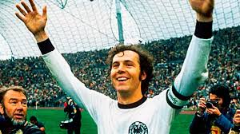

Franz Beckenbauer nació en Alemania y es considerado uno de los mejores defensores en la historia del fútbol. Desde joven destacó por su elegancia y su capacidad para leer el juego, lo que lo diferenciaba del resto de los jugadores de su posición.
Desarrolló la mayor parte de su carrera en el Bayern Múnich, donde se convirtió en líder del equipo y pieza fundamental en su éxito tanto a nivel nacional como internacional. También tuvo participación importante con la selección alemana.
Beckenbauer no solo defendía, sino que también iniciaba jugadas ofensivas, lo que cambió completamente la forma en que se entendía el rol de un defensor.
Ganó la Copa del Mundo con Alemania como jugador en 1974 y posteriormente como entrenador en 1990, logrando una hazaña muy difícil de igualar en el fútbol.
También consiguió múltiples títulos con el Bayern Múnich, incluyendo competiciones europeas, consolidándose como uno de los jugadores más exitosos de su época.
Uno de los momentos más recordados de su carrera fue su liderazgo en la Copa del Mundo de 1974, donde Alemania se coronó campeón.
Su capacidad para dirigir al equipo desde la defensa lo convirtió en una figura clave en los partidos más importantes.
Beckenbauer se caracterizaba por su elegancia, inteligencia y control del balón. Jugaba como líbero, una posición que él mismo ayudó a redefinir.
Tenía la capacidad de salir jugando desde la defensa, crear jugadas y aportar al ataque, algo que en su época no era común.
Franz Beckenbauer es considerado una leyenda del fútbol mundial y uno de los jugadores más influyentes en la evolución del juego.
Su estilo marcó el inicio de una nueva forma de jugar en defensa, inspirando a generaciones futuras de futbolistas.